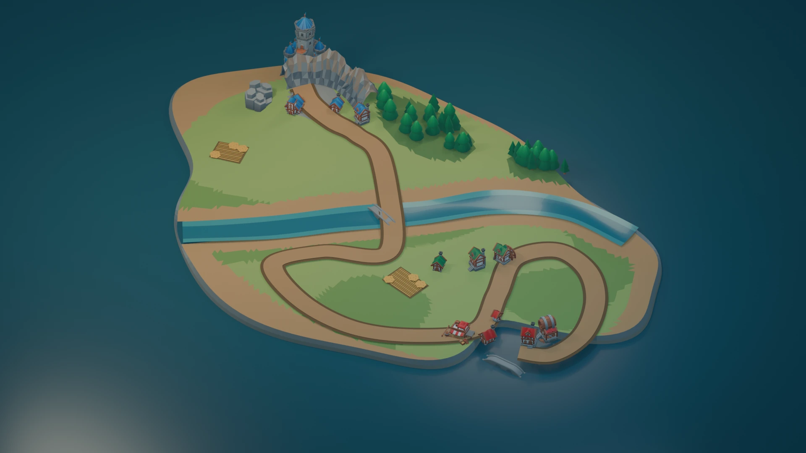
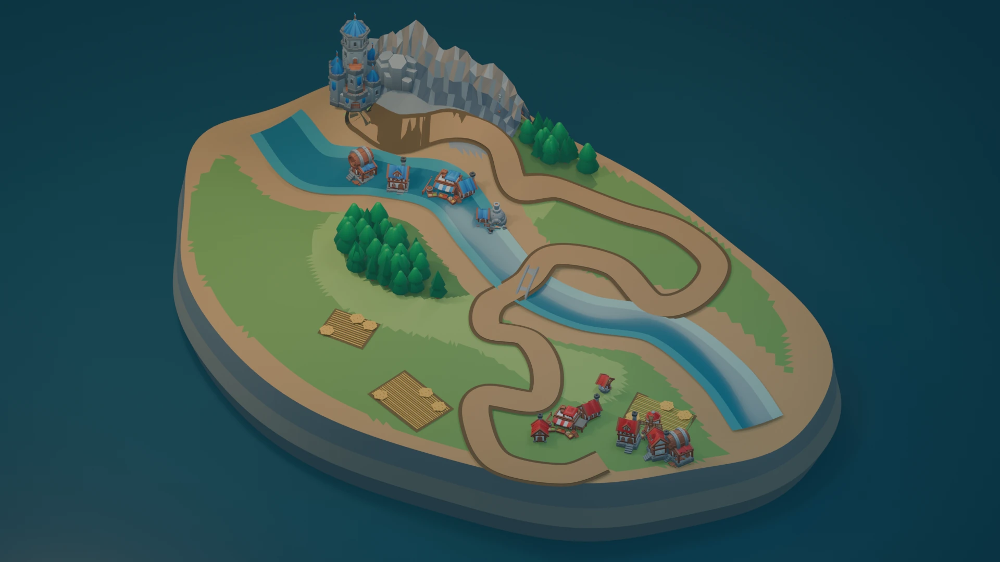
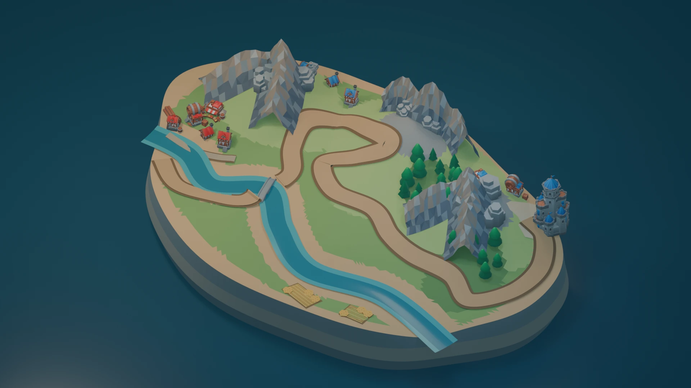
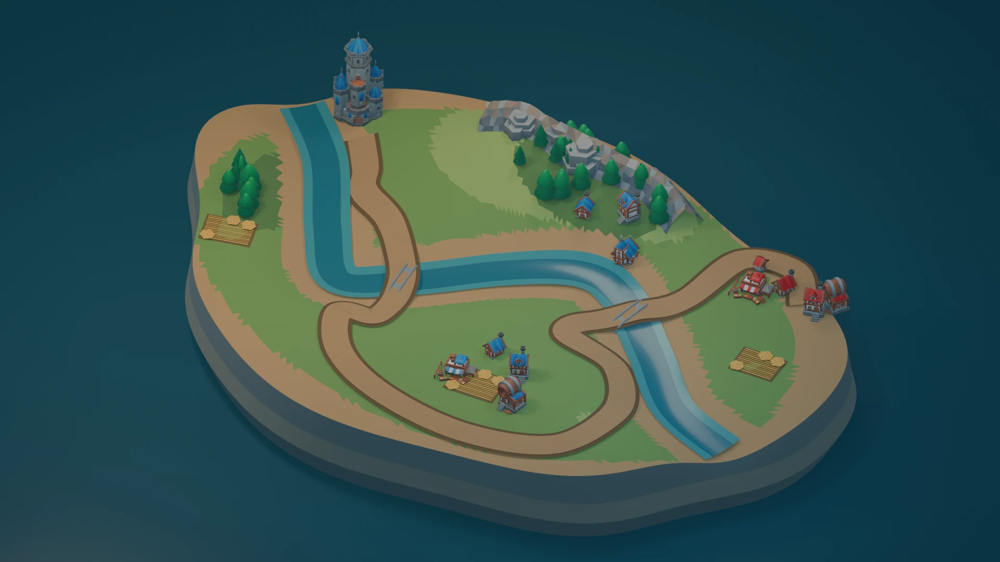

Choose your world
Four offline adventure boards. Each keeps the same scoring and spectator controls.

The Sapphire Reach
Coastal Kingdom
Supported steps: 30, 40, 50
Open board ↗
The Long Crossing
Kingdom Quest
Supported steps: 30, 40, 50
Open board ↗
The High Switchbacks
Mountain Pass
Supported steps: 30, 40, 50
Open board ↗
The Two Crossings
Winding River
Supported steps: 30, 40, 50
Open board ↗